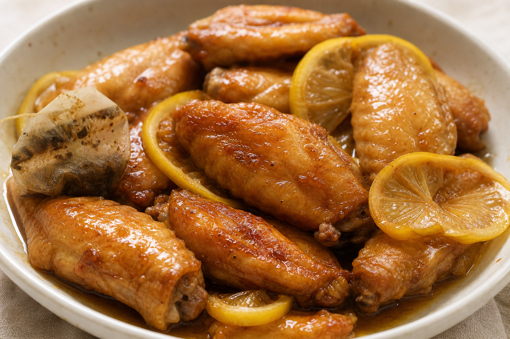

← 返回目錄
檸檬茶雞翼
檸檬茶雞翼係一道港式家常小菜，用檸檬茶入味，酸甜開胃，適合蒸烤箱或平底鍋製作，簡單易上手。

材料（約4人份）
雞翼：8–12 隻（約 1 磅，急凍雞翼浸淡鹽水解凍去血水）。
薑片：3 片。
醃料：生抽 3 茶匙、老抽 1 茶匙、紹興酒或花雕酒半茶匙、檸檬汁 1 茶匙、粟粉 1 茶匙、胡椒粉少許。
醬汁：檸檬茶 100ml、檸檬汁 1 茶匙、老抽半茶匙、冰糖或片糖適量（約 4 湯匙）。
做法
雞翼洗淨印乾，用醃料拌勻醃 30 分鐘。
平底鍋熱油煎香薑片，再放入雞翼雞皮向下，中火煎至兩面金黃（約 5 分鐘）。
倒入醬汁，加伯爵紅茶包（加強茶香），中火煮滾後小火蓋鍋煮 12–16 分鐘，中途翻面。
取出薑片及茶包，大火收汁至濃稠，回鍋雞翼沾勻，上碟灑檸檬皮絲。
小貼士
用 Midea 蒸烤箱可改蒸模式：醃好後 180°C 蒸烤 15–20 分鐘，再刷醬汁烤 5 分鐘，少油更健康。
想更甜酸，加最後 1 茶匙檸檬汁拌勻，避免苦澀去檸檬籽。
配飯或啤酒一流，失敗率低，新手必試。
營養價值
蛋白質來自雞翼，適合做主菜。
醬汁帶甜酸味，口味重但容易下飯。
如想健康啲，可減糖同減油。
常見作用
作為家常小菜，做法簡單。
酸甜茶香令味道更開胃。